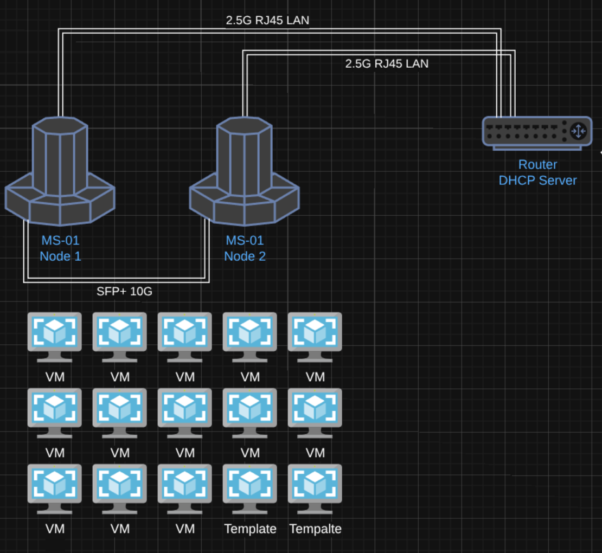
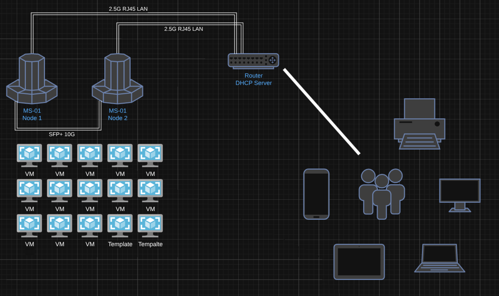

THE FOLLOWING PRESENTATION HAS BEEN "APPROVED" FOR
APPROPRIATE AUDIENCESBY THE TECHBASH SPEAKERS COMMITTEE
MAY CONTAIN:
LESS THAN IDEAL SOLUTIONS,
QUESTIONABLE SECURITY PRACTICES,
VIBES, A CODEX, QUIPS, FUNNY REMARKS, AI HALLUCINATIONS,
A HIGH PROBABILITY OF UNFINISHED CODE AND EXAMP
THE PRESENTATION SHOWN HAS BEEN RATED
DISCLAIMER - PART 1
All views, opinions and stances, expressed or implied, are mine and mine alone and do not represent the views, opinions or stances of any employer or company, past, present or future.
DISCLAIMER - PART 2
This presentation is for educational and home lab use only
This session focuses on time-saving home labbing strategies, not necessarily production grade security
It does not constitute professional security advice
Implementations and examples are lab only
CODE NOTICE
Sample code and configuration snippets in this session are provided under the MIT License, as-is, without warranty or guarantee of fitness for any purpose
Use responsibly and review before applying and/or executing
You assume all risk associated with their use
DISCLAIMER - PART 3
No AI Assistants, users or homelabs were harmed in the making of this presentation
All activities were performed by "trained professionals" on closed networks
Results may vary; your uptime and harmony at home are not guaranteed
Proceed at your own risk, you have been warned
AI Attribution
This work was primarily human-created. AI was used to make stylistic edits, such as changes to structure, wording, and clarity. AI was used to make content edits, such as changes to scope, information, and ideas. AI was used to make new content, such as text, images, analysis, and ideas. AI was prompted for its contributions, or AI assistance was enabled. AI-generated content was reviewed and approved. The following model(s) or application(s) were used: OpenAI's GPT-5 (ChatGPT), Claude Code [Sonnet 4].
https://aiattribution.github.io/statements/AIA-Ph-SeCeNc-Hin-R-?model=OpenAI%27s%20GPT%252D5%20(ChatGPT)%2C%20Claude%20Code%20%5BSonnet%204%5D-v1.0
The Law of Two Feet
You deserve to get the most value out of your conference experience.
If this session isn't what you were expecting, or you think you'll get more value from a different session, please do not feel obligated to stay.
I'd rather you get the most out of your time at this conference.
Home Labbing on a Time Budget
Andrew Potozniak
About Me
- Family
- Coaching
- Hobbies
- Board Games, Sports, Home Labbing,
Blackstone Cooking
- Board Games, Sports, Home Labbing,
- Vibe-Coder 1.z3r0
- Blogger
[ TODO: INSERT WELL TIMED JOKE SLIDE "creating a conference presentation on a time budget" ]
Home Labbing Creating a Presentation for TechBash on a Time Budget
Andrew Potozniak
Home Labbing on a Time Budget
Andrew Potozniak
Overview
- Key Takeaways
- What is Home Labbing
- Requirements
- Tips & Tricks
- Automation
- Core Services
- Recap & Closing
Key Takeaways
- Optimize Time: Apply practical shortcuts and workflows that keep your lab useful without turning it into a second job
-
Design Smart: Identify which services matter most and scope your lab to match your time budget
- DNS, PKI, IDAM vs Git Repository, Artifact Repository, etc
-
Evaluate Goals: Is it a nice to have, or am I doing this to learn or to achieve a concrete goal?
(Do I really need that full 3 tiered and HA design for [system] (i.e. gitea), or will an all-in-one approach with SQLite be enough?)
Key Takeaways
- Automate Early: Use automation to simplify setup, maintenance, and patching, so your lab doesn't eat into family or other free time
- Stay Independent: Build your lab on self-hosted tools instead of relying on cloud/external solutions (as best as you can)
- Be Flexible: You can always pivot and iterate as you learn
Key Takeaways
- Document Everything: You figured it all out at least once, so why waste time figuring it out again?
- Take Notes: Trust me, you'll rely on your notes more than you'll know
What is Home Labbing?
Home labbing is the wonderfully expensive hobby where you turn your extra hardware into a small-scale "data center"
(and occasionally, a space heater)
Usually built to learn and experiment with technology
(also to justify that "old" server in the basement)
Why do I home lab?
- To Learn
- To be able to Experiment in a Zero Risk environment
My Home Lab

My Home Lab

My Home Network

My requirements
- Not exposed to the Internet
- Zero 9s of availability
- Simpler is better
- Minimal reliance on cloud
- Feel the "pains" of an enterprise
- Something that I can drop and pick up months later
- Re-build from "scratch" relatively quickly
- Backup and Recovery
- "Control" Node in the Home Lab
- Minimize MTTC
What are your requirements?
Write down your requirements in a TODO list.
It will help you with scope creep, and help you avoid the shiny object
Quick Tips - Naming Convention
There are only two hard things in Computer Science: cache invalidation and naming things , and off-by-one errors.
- Phil Karlton
- Jeff Atwood / Leon Bambrick
You're exactly right, and AI Hallucinations.
- Andrew Potozniak
Quick Tips - Naming Convention
You'll want to come up with a naming convention.
Something meaningful, concise that contains server numbering.
homelab-[vm purpose or system]-0000
homelab-[os]-[version]-base
Quick Tips - Numbering Convention
vmids
900s for templates
000s for core services
Quick Tips - Passwords
Come up with some memorable clever scheme for the passwords for accounts within your home lab, but different from everything else you use, and not the defaults, or 'password'.
DISCLAIMER
This is NOT security advice (seriously, it's not)
Quick Tips - Directory Structure
Have a good memorable structure so you're not chasing down documents, playbooks or scripts.
home-lab-management/
├── ansible/
│ ├── guest-vm/
│ │ ├── gvm_generate_ssh_keys.yml
│ │ ├── gvm_patching_apt.yml
│ │ ├── gvm_patching_dnf.yml
│ │ ├── gvm_simple_ping.yml
│ │ ├── gvm_update_etc_hosts.yml
│ │ ├── gvm_update_network_netplan.yml
│ │ └── gvm_update_network_nmcli.yml
│ ├── host/
│ │ └── host_patching_apt.yml
│ ├── proxmox/
│ │ ├── pxmx_create_vms_from_template.yml
│ │ ├── pxmx_get_vms_state.yml
│ │ ├── pxmx_migrate_vms.yml
│ │ ├── pxmx_remove_vms.yml
│ │ ├── pxmx_restart_vms.yml
│ │ ├── pxmx_snapshot_vms.yml
│ │ ├── pxmx_start_vms.yml
│ │ ├── pxmx_stop_nodes.yml
│ │ ├── pxmx_stop_vms.yml
│ │ ├── pxmx_update_cpu_vms.yml
│ │ └── pxmx_update_memory_vms.yml
│ └── systems/
│ ├── control/
│ │ └── bootstrap_control_ubuntu.yml
│ ├── dns/
│ │ ├── assign_next_available_ip_technitium.yml
│ │ ├── bootstrap_technitium.yml
│ │ ├── create_a_record_technitium.yml
│ │ └── install_technitium_ubuntu.yml
│ ├── keycloak/
│ │ └── install_keycloak.yml
│ └── ldap/
│ ├── install_ldap_account_manager_ubuntu.yml
│ ├── install_openldap_ubuntu.yml
│ └── setup_ldap_directory.yml
└── terraform/
└── proxmox/
└── ubuntu/
├── mutli-vm/
│ ├── 000_variables.tf
│ ├── 001_provider.tf
│ ├── 002_vm_build.tf
│ └── 003_output.tf
└── single-vm/
├── 000_variables.tf
├── 001_provider.tf
├── 002_vm_build.tf
└── 003_output.tf
Quick Tips - Command History
When you've forgotten to write things down, the command history is your new friend.
If you take away anything from this presentation today, fzf is one of the best utilities that I use on a daily basis to save time.
fzf - command-line fuzzy finder - https://github.com/junegunn/fzf
Automation
The three D's of Automation
Document, Document and Document!
WRITE IT DOWN!!!
If you have limited time, and you'll come back to something later, having really good and detailed notes will help you immensily.
Don't rely on links! How many times have you gotten back to something and there's a link and that link doesn't work anymore or whatever was on that page was changed, rely on your notes!
Documentation is "automation" when time is limited and it is the foundation for automating later.
$ ansible-playbook -i homelab-server-0001,homelab-server-0002, \
-u user-one -K -k \
--ssh-common-args '-o StrictHostKeyChecking=no -o UserKnownHostsFile=/dev/null' \
./home-lab-management/ansible/guest-vm/gvm_patching_apt.yml
---
- name: Patch Guest VM (apt)
hosts: all
gather_facts: false
become: true
tasks:
- name: Update APT Packages
ansible.builtin.apt:
name: "*"
update_cache: true
state: "latest"
notify:
- Reboot Host
handlers:
- name: Reboot Host
ansible.builtin.reboot:
msg: "OS Patching completed, rebooting"
reboot_timeout: 1800
$ terraform apply
resource "proxmox_vm_qemu" "tf-ubuntu-test" {
name = "${var.vm_guest_name}"
desc = "A VM created for terraform testing."
target_node = var.proxmox_target_node
tags = null
clone = var.clone_name
full_clone = true
disk {
type = "disk"
storage = "local-lvm"
slot = "scsi0"
size = "40G"
emulatessd = true
discard = true
iothread = true
format = "raw"
}
network {
id = 0
model = "virtio"
bridge = "vmbr0"
}
bios = "ovmf"
agent = 1
cores = 4
sockets = 1
memory = 8192
hotplug = "disk,network,usb"
scsihw = "virtio-scsi-single"
os_type = var.os_type
ipconfig0 = "ip=dhcp"
skip_ipv6 = true
}
$ terraform destroy
Planning your VMs - ssh keys for easy access, sudoers, motd
Sure, containers can be quicker, everything is already baked in, but you'll still need a VM, you'll need to manage the container runtime, and if you forget to setup proper volume mounting, boom you could lose a bunch of data and configuration (unless you want to test other automation against something like this). If you do use containers, make sure you trust the source you're pulling them from.
- The CA Root
PKI - Public Key Infrastructure
- mkcert [RootCA -> Leaf] mkcert [dns] [dns] [ip] [ip] $ mkcert dns-entry-1 dns-entry-2 127.0.0.1 192.168.1.1 Created a new local CA 💥 Note: the local CA is not installed in the system trust store. Run "mkcert -install" for certificates to be trusted automatically ⚠ Created a new certificate valid for the following names 📜 - "dns-entry-1" - "dns-entry-2" - "127.0.0.1" - "192.168.1.1" The certificate is at "./dns-entry-1+3.pem" and the key at "./dns-entry-1+3-key.pem" ✅ It will expire on 31 January 2028 🗓 $ ls dns-entry-1+3-key.pem dns-entry-1+3.pem rootCA-key.pem rootCA.pem ***PRIVATE KEYS ARE NOT PASSWORD PROTECTED*** want to start over - remove ~/.local/share/mkcert/*
- openssl More complex certificates openssl genrsa -out rootCA.key 4096 openssl req -x509 -new -nodes -key rootCA.key -sha256 -days 3650 -subj "/CN=PDC Home Lab Root CA Testing/O=PDC/C=US" -out rootCA.pem openssl x509 -in rootCA.pem -text -noout
- kemo's PKI the hard way